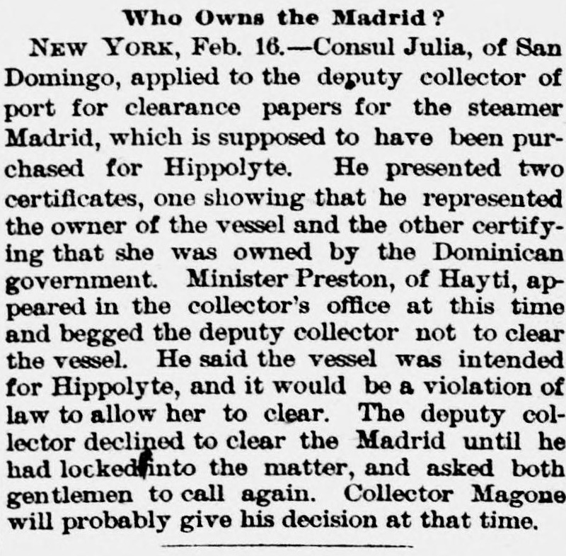
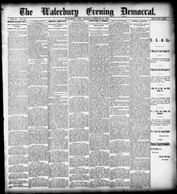

Consul Julia, of San Domingo, applied to the deputy collector ofEl cónsul Julia, de San Domingo, solicitó al recaudador adjunto de
Waterbury Evening Democrat. Waterbury, Conn., February 16, 1889. Page 1. View the originalVer el original


See the full pageVer la página completaOn February 16, 1889, Consul Julia of San Domingo applied to the deputy collector of the port in New York for clearance papers for the steamer Madrid, presenting certificates claiming the vessel was owned by the Dominican government and himself. Minister Preston of Hayti opposed the clearance, stating the ship was intended for Hippolyte and would violate the law, prompting the deputy collector to withhold a decision until Collector Magone reviews the matter.El 16 de febrero de 1889, el cónsul Julia de Santo Domingo solicitó del segundo recaudador del puerto de Nueva York los despachos de salida para el vapor Madrid, aportando certificaciones que acreditaban que el buque era propiedad mancomunada del gobierno dominicano y de su propia persona. El ministro haitiano Preston se opuso al despacho, aduciendo que la nave se destinaba a la facción de Hyppolite en contravención de las leyes, lo que indujo al recaudador adjunto a suspender la providencia en espera de que el administrador Magone examinara el asunto.
FULL TEXT:TEXTO COMPLETO:
Who Owns the Madrid?¿Quién es el dueño del Madrid?
NEW YORK, Feb. 16.—Consul Julia, of San Domingo, applied to the deputy collector of port for clearance papers for the steamer Madrid, which is supposed to have been purchased for Hippolyte. He presented two certificates, one showing that he represented the owner of the vessel and the other certifying that she was owned by the Dominican government. Minister Preston, of Hayti, appeared in the collector's office at this time and begged the deputy collector not to clear the vessel. He said the vessel was intended for Hippolyte, and it would be a violation of law to allow her to clear. The deputy collector declined to clear the Madrid until he had looked into the matter, and asked both gentlemen to call again. Collector Magone will probably give his decision at that time.NUEVA YORK, 16 de febrero.—El Cónsul Julia, de Santo Domingo, solicitó al recaudador auxiliar del puerto documentos de despacho para el vapor Madrid, que se supone ha sido comprado para Hippolyte. Presentó dos certificados, uno mostrando que representaba al propietario del buque y el otro certificando que era propiedad del gobierno dominicano. El Ministro Preston, de Haití, apareció en la oficina del recaudador en este momento y rogó al recaudador auxiliar que no despachara el buque. Dijo que el buque estaba destinado a Hippolyte, y sería una violación de la ley permitirle despachar. El recaudador auxiliar declinó despachar el Madrid hasta haber investigado el asunto, y pidió a ambos caballeros que llamaran de nuevo. El Recaudador Magone probablemente dará su decisión en ese momento.